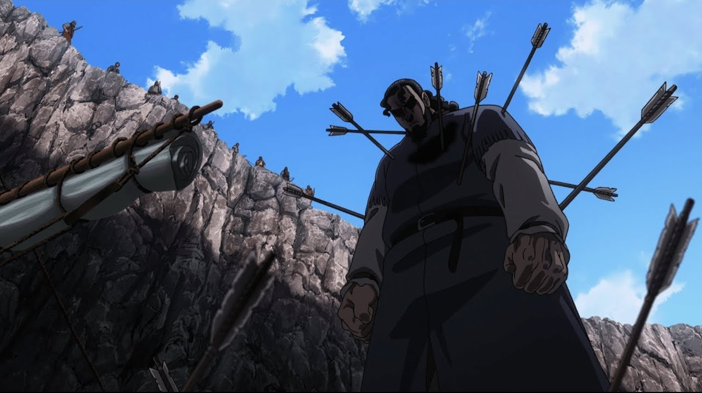

Vinland Saga est un manga écrit et dessiné par Makoto Yukimura. L'histoire se déroule au XIe siècle en Europe, où le jeune guerrier Thorfinn aspire à venger son père, un ancien soldat viking assassiné par le cruel mercenaire Askeladd. Thorfinn rejoint alors la bande d'Askeladd dans l'espoir de le tuer, mais se retrouve pris dans une série de batailles épiques qui mettent en lumière les complexités de la vie de guerrier. Le manga explore des thèmes tels que la violence, la loyauté, l'honneur et la rédemption, tout en offrant des scènes de combat spectaculaires et une intrigue captivante.
 {% endblock content %}